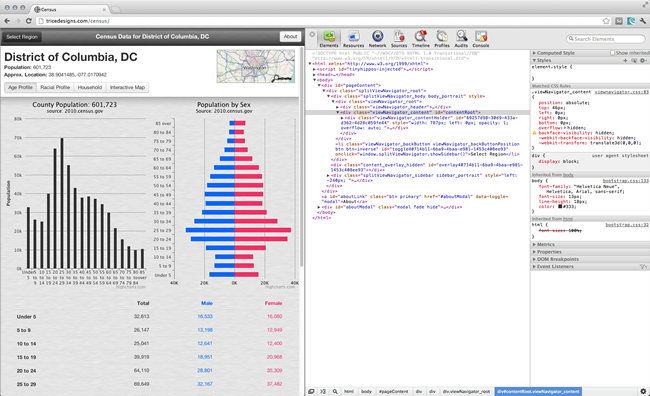
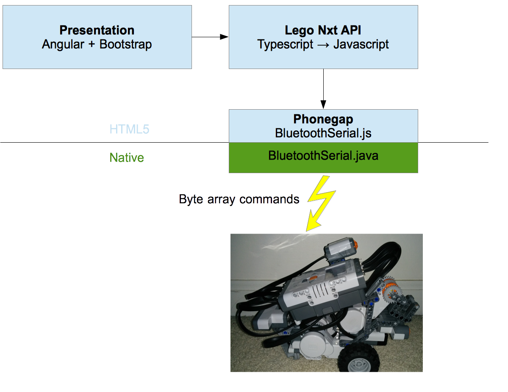
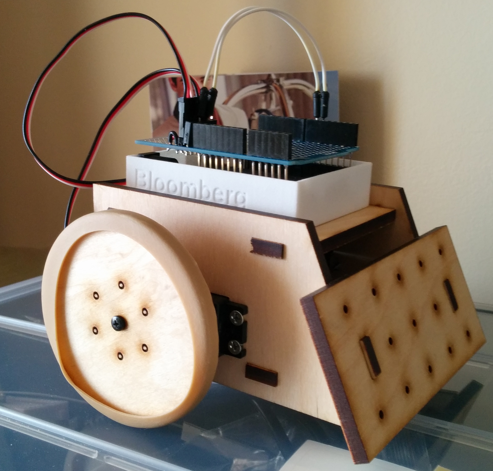
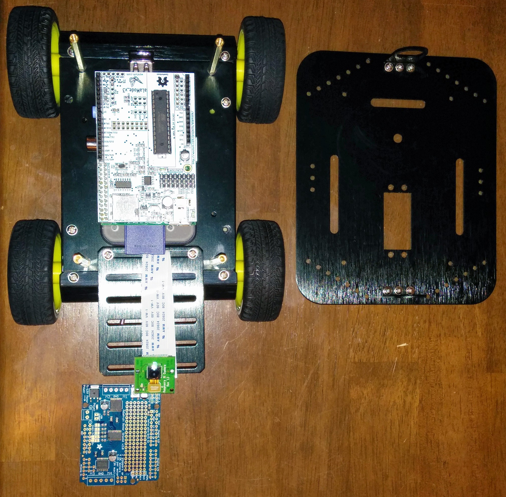

PhoneGap
Lego NXT Robot Project
Matthew Ronemous
Software Architect
Meet Johnny
- Sonar Front / Back
- Compass
- Camera Lift
Name this tune
Mary had a little lamb
History
Nitobi - iPhoneDevCamp San Francisco 2009
Purchased by Adobe 2011
Donated to Apache as Cordova 2011
Cordova -> Phonegap = Webkit -> Chrome
Phonegap adds cloud build support to cordova
Random Trivia
Where did the name "Cordova" come from?
Cordova Street was near Nitobi office
What is PhoneGap?
Build your UI with HTML5

Native Web View
Access native functionality through PhoneGap

Creating Phonegap Apps
Cordova CLI
$ cordova create hello com.example.hello HelloWorld && cd hello
$ cordova platform add ios
$ cordova platform add android
$ cordova plugin add org.apache.cordova.deviceFile Structure
merges
android
ios
platforms
android
ios
plugins
www
config.xml
Debugging Phonegap Apps
Desktop
Safari, FireFox, and IE have similar developer tools
Ripple Emulator

$npm install -g ripple-emulator
ripple emulate --path platforms/android/assets/www
Remote Debugging
developers.google.com

moduscreate.com
Weinre
Creating Custom Plugins
config.xml
//id
Javascript
id action parameters
cordova.exec( success, failure, "BluetoothSerial", "write", [data] )Java
package com.megster.cordova;
public class BluetoothSerial extends CordovaPlugin {
private static final String WRITE = "write";
@Override
public boolean execute(String action, CordovaArgs args, CallbackContext callbackContext) throws JSONException {
if (action.equals(WRITE)) {
String data = args.getString(0);
bluetoothSerialService.write(data.getBytes());
callbackContext.success();
}
...
}
}plugin.xml
//js interface
//id
//native package
//Files to copy into native project
Publish Plugin
docs
plugin.xml
src
android
BluetoothSerial.java
BluetoothSerialService.java
www
bluetoothSerial.js
cordova.io
Why?

- Teach my kids programming
- Learn new technologies
- Share PhoneGap knowledge with community
- Robot!
Tech Stack
- Yeomen
- Bower / Npm
- Grunt
- Angular + Bootstrap
- Typescript
- Cordova
Grunt Power!
- Windows + Mac
- Asset minification / bundling
- ATL JS/CSS watch compiler
- Local webserver
- Js hint
- Auto-testing
- Cordova build
Architecture

Bluetooth Serial Plugin
API
connect(macAddress, success, failure)
disconnect(success, failure)
read(success, failure)
write(data, success, failure)
...
Author: Don Coleman
Accelorometer Plugin
API
watchId = watchAcceleration(success, failure, options = { frequency: 500 })
clearWatch(watchId)
...
Author: Cordova
Speech to Text Plugin
API
recognition = new SpeechRecognition()
recognition.start()
recognition.onresult = function(event)
recognition.onerror = function()
recognition.stop()
...
Author: Simon MacDonald
Arduino Hack
- Build from stock parts
- Soldering practice
- Electrical circuit design
- Controlled by Johnny Five NodeJs API

Cool Things
NodeJs Rover (Next Project)

- Raspberry Pi + Arduino
- Camera + Sonar + GPS
- Johnny Five
Matthew Ronemous
Software Architect
References
Andrew TriceDev Girl
cordova.apache.org/docs
Creating Custom Plugins
Ray Camden
Mono Brick
Robot App Store
Bluetooth Serial Plugin
Speech to Text Plugin